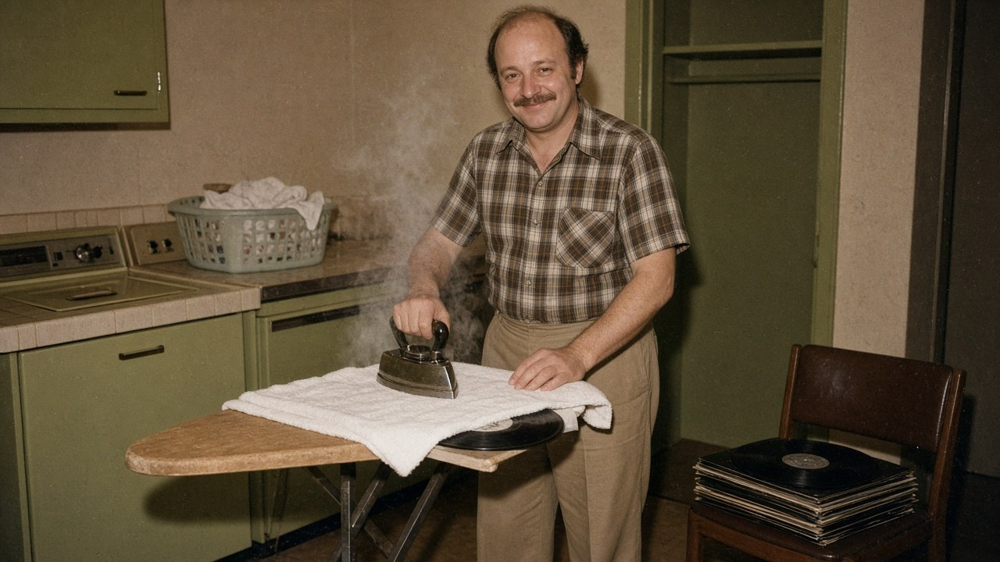
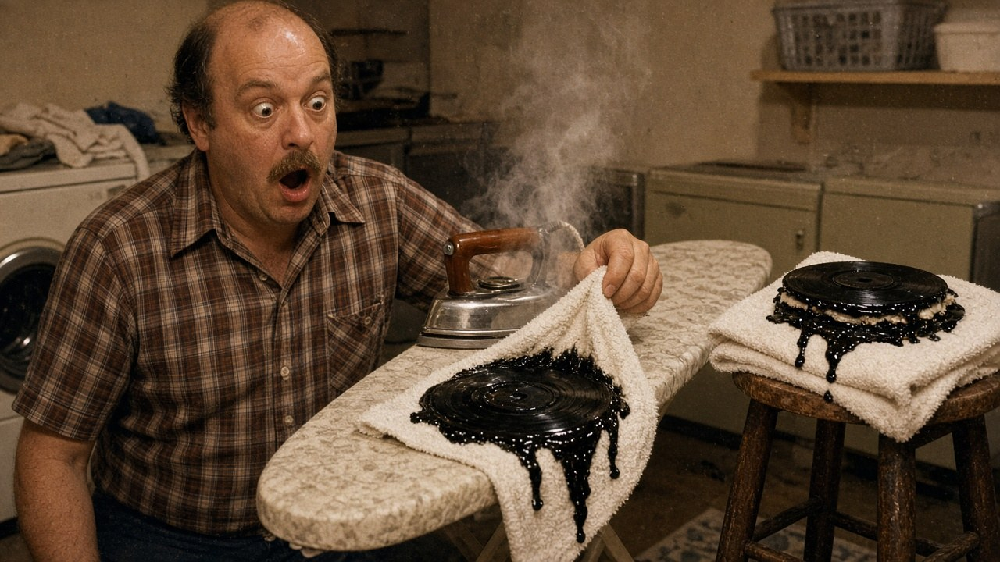
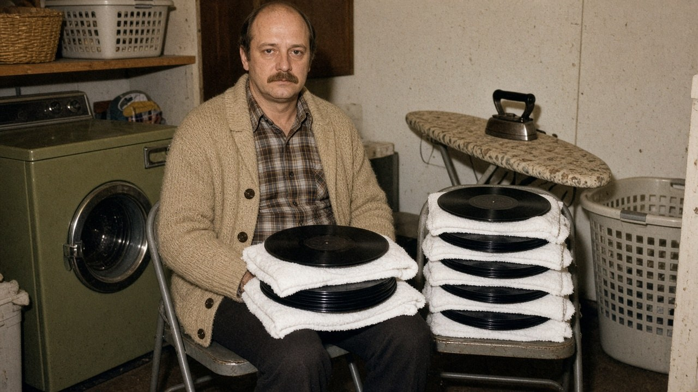

Vinyl desk · The interview ·
“Low Heat, It Said”
Earl Blodgett of Middle Fudgeley, Ohio, heard you can flatten a warped record with a clothes iron and a towel. The records came out perfectly flat. So did the towels.

We found Earl in the laundry room, which is also where he keeps the stereo, “for the acoustics.” He offered us a chair. It was warm.
Earl, what happened?
I fixed my records. They were warped from the attic. Now they’re flat. Permanently. They’re also towels.
Where did you hear about the iron trick?
A fellow at Vern’s Spin City. He said “between two towels, low heat, don’t leave it.” I heard “towels”, “heat” and “leave it”.
How long did you leave it?
Long enough to make a sandwich. Then I made a sandwich. Then I remembered the iron.

And the setting?
The dial said Low. I turned it to Cotton, for the towels. The towels were cotton. I’m a logical man.
“They’re perfectly flat. You could serve dinner on side two.”
Can you still play anything?
They’re perfectly flat. You could serve dinner on side two. The grooves are gone. What’s left is a shiny black place mat with a hole in the middle. My wife uses one as a trivet. The lasagna is very quiet.
What about the towels?
They’re also records now. Or the records are towels. Either way, you can’t dry your hands on “Hotel California” any more. We tried. Guests complain.
Advertisement · fake

So what now?
I’m at Vern’s every Saturday. There’s a line. It’s me, a man who glued his, and a woman who smells like a salon. We compare receipts. Vern’s putting in central heating. He says it’s thanks to the three of us. I asked if that was a compliment. He said no.
Does Vern still talk to you?
He sold me my own copy of Rumours back for four times what I paid. He said it was “heat-resistant now, historically.” I asked what that meant. He pointed at the ironing board I still keep in the car.
Any advice for our readers?
Support your local record shop. And if a record is warped, put a weight on it and wait a week. Or buy another copy. Do not introduce an iron. The iron already has a job.
Fine print: Earl is invented. Never put a clothes iron, hair dryer or any other heat source on a vinyl record: heat softens the vinyl, flattens the grooves and can fuse the disc to whatever’s under it. A light weight on a warped record, left for several days at room temperature, is the only home fix that sometimes works. No records were harmed in the making of this interview. One hundred and forty-eight were harmed before it. Several towels were promoted.
← Back to the true tales